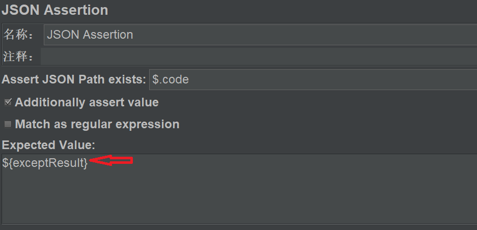

Apache JMeter是用来负载功能测试和性能测试的纯Java开源软件, 可以使用JMeter对web应用或各种各样服务的性能进行分析和度量, JMeter最初被设计用于Web应用或FTP应用测试，现在扩展到功能测试、数据库服务器测试等。
常见的性能测试工具有LoadRunner,Jmeter，是Java开发的，都是免费开源的，
运行环境Java，所以安装Jmeter前必须要要安装Java
启动
进入Jmeter项目文件的bin目录，双击jmeter.bat启动
打开时有两个窗口，Jmeter的命令窗口和Jmeter的图形操作界面，不可以关闭命令窗口
根目录说明
- backup目录 ：脚本备份目录，里面的文件都是以.jmx后缀结尾
- bin目录：可执行文件
- Jmeter.bat: 是启动jmeter的主脚本
- Jmeter-server.bar:是用来实现联机负载
- Jmeter.properties: 是jmeter主要的配置文件，查过80%的配置项都是通过这个文件实现（PS：修改配置文件后，要重启Jmeter才能生效）
- 在
#language=en下面插入一行language=zh_CN重启Jmeter后界面默认显示中文 - 在
\#sampleresult.default.encoding=ISO-8859-1下插入一行sampleresult.default.encoding=utf-8,解决Jmeter中控制台无法识别中文导致乱码的问题。
- 在
编写项目测试脚本
Jmeter做接口测试
- 业务流程串联测试
- 单个接口测试
添加线程组
- 测试用例，性能测试中也叫场景，一个测试计划中可以包含多个线程组
- 配置线程组参数
线程数：虚拟用户数
Ramp-Up时间（秒）：设置的虚拟用户数需要多长时间全部启动，如果线程数为100，准备时长为5，那么需要5秒钟启动100个线程，也就是每秒钟启动20个线程。 相当于每秒模拟20个用户进行访问，设置为零我理解为并发访问。
循环次数：如果线程数为100，循环次数为100。那么总请求数为100*100=10000 。如果勾选了“永远”，那么所有线程会一直发送请求，直到选择停止运行脚本。
添加测试接口
协议：向目标服务器发送HTTP请求协议，可以是HTTP或HTTPS，默认为HTTP。
服务器名称或IP ：HTTP请求发送的目标服务器名称或IP。
端口号：目标服务器的端口号，默认值为80
方法：发送HTTP请求的方法，可用方法包括GET、POST等。
路径：目标URL路径（URL中去掉服务器地址、端口及参数后剩余部分）。
内容编码：编码方式，默认为ISO-8859-1编码，
参数：同请求一起发送参数 ，在请求中发送的URL参数，例如GET请求时，有时会需要填写
消息体数据：一般是POST请求中，请求参数写在这里（Json格式）
添加查看结果数
查看结果
- 取样器结果，http状态码
- 请求：请求类型/地址/参数/请求头
- 响应数据：服务器返回的数据，有搜索功能，可以搜索你需要查看的返回值
- 根据结果树排查出错原因
- 观察脚本是否报错
- 查看状态码判断问题
- 请求信息是否正确
- 返回值查看结果
HTTP信息头管理
Json断言
断言：实际结果和预期结果做对比
断言原理 ：工具自动判断http状态码，如果状态码>400,直接报错，如果http状态码正常，再根据自定义的断言进行判断。

- 配置Json断言具体信息
$ 代表Json对象，例如$.code,
Expected Value: 预期结果，例如1， 这里的意思就是，预期后台反馈Json对象中Code值为1.
断言结果
下列是预期结果和实际结果一致
下列是预期结果和实际结果不一致
关联
上一个接口的返回值给下一个接口用
Json提取器
在第二个接口中引用变量gtoken
参数化
准备好参数文件，一般以txt结尾

添加配置原件-CSV数据文件设置
- 引用变量

- 运行结束后的结果如下，产生了三个测试用例。
添加聚合报告

性能测试
聚合报告
为了测试出效果，我这里模拟30个用户并发访问获取数据，循环5次，线程组数据修改如下：
分析测试报告
聚合报告参数详解
**样本(Samples)**：请求数——表示这次测试中一共发出了多少个请求，我这里模拟了
30个用户循环5次也就为30*5=150。平均值(Average)：平均响应时间(单位:
ms)。默认是单个Request的平均响应时间，**中位数(Median)**：也就是
50％用户的响应时间。95% Line：
95％用户的响应时间，建议取这个值。**最小值(Min)**：最小响应时间。
**最大值(Max)**：最大响应时间。
失败率（Error）：错误率——错误请求数/请求总数。
**吞吐量(Throughput)**：服务器每秒处理的请求量，相同条件下吞吐量越大，服务器的性能越强，
接收 KB/Sec：每秒从服务器端接收到的数据量，
发送 KB/Sec：每秒向服务器发送的数据量，
性能指标
- 响应时间：建议取95%Line；
- 失败率（Error）
- 吞吐量
- 服务器的CPU使用率，这样要在服务器上或者服务器管理端去看
性能指标量化
响应时间：每个行业有不同的要求，每个项目也有不同的标准，如果没有任何参考，可以以258原则参考，2s-优秀，2~5s-良，5-8s-可接受，超过8s，不接受
前台标准：一般互联网行业，2000qps下，失败率不超过0.05%，95%line为不超过300ms可接受；非互联网行业，2000qps下，失败率不超过0.1%，95%line为不超过1.5s可接受
并发
- 并发用户数，服务器同时刻接收到的用户量
- 并发请求数（QPS）：服务器同时刻接收到的请求数量
设置并发
- 设置线程数
这里设置的300个用户数，10秒内启动完这些用户（也就是20秒内用户数从0增加为300，每秒增加30个用户），持续5分钟（这里前 10秒用户数是一直递增的，10秒后用户数保持300，）
- 集合点（瞬时并发比较高的业务，时间短，例如双11）
拦截50个人一组一起并发调用（也就是等到用户凑够50个人时，才一起同时刻调用），如果等了3000ms（3s）没有凑高50人，那就有多少人，用多少，不强求。